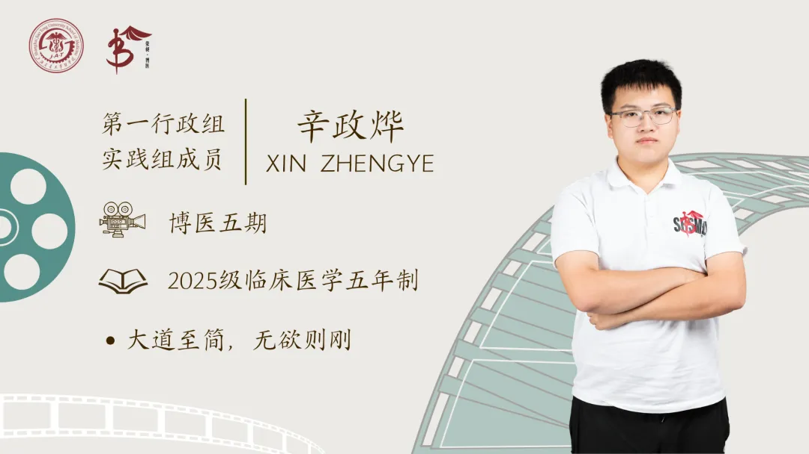

博医之窗 / 五期
30位学员，按公示名单的姓氏拼音顺序收录。先从姓名、专业和已有作品认识彼此。
资料依据2026年5月的学员名单公示；照片、履历与岗位任期由本人确认后补充。
博医之声 · 三期全文
博医五期 · 文章作者
经验与凝视——浅谈现代临床语言的形成、断裂与弥合

七月稻禾青，健康伴童行
一纸问卷的温度
来源：五期学员名单公示（公示期2026年5月26日至6月1日）。公示原图一 · 公示原图二